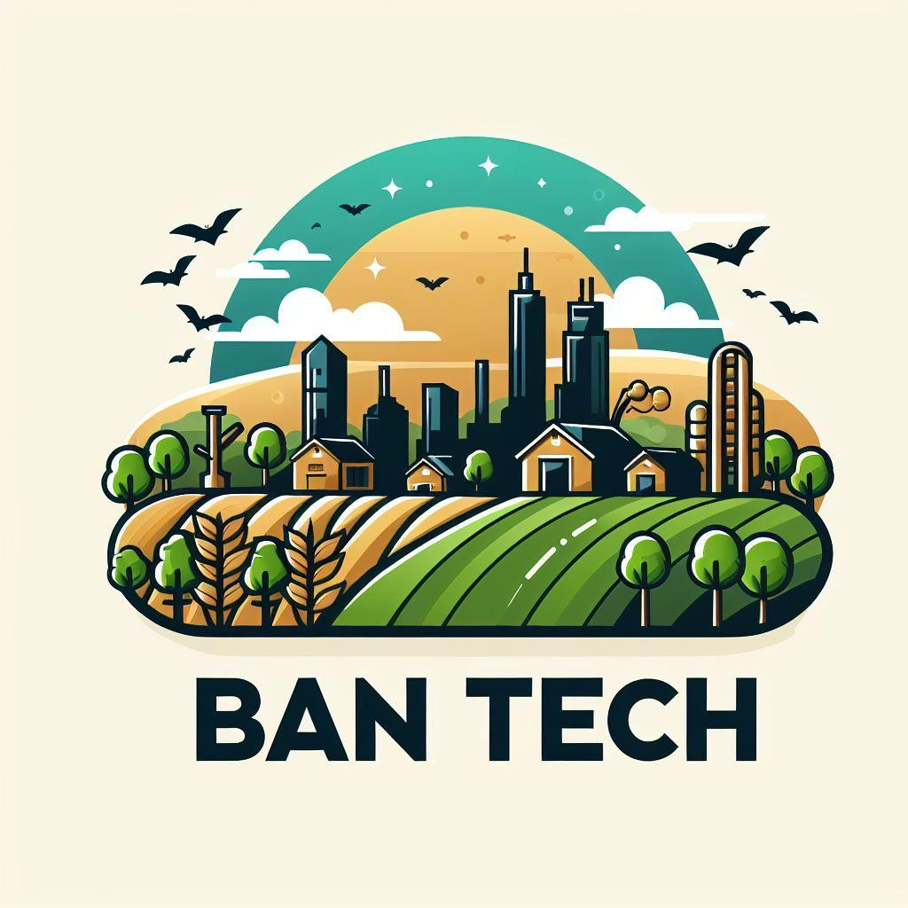

Ban Tech:Conectando Produtores Rurais a Consumidores Urbanos
imagem autoral

imagem autoral imagem autoral
O Ban Tech é uma inovadora plataforma de e-commerce dedicada a transormar a relação entre o campo e a cidade. Focada na compra e venda direta de produtos agrícolas, a Ban Tech permite que produtores rurais comercializem seus produtos frescos e de alta qualidade diretamente com consumidores urbanos, eliminando intermediários e garantindo preços mais justos para ambas as partes.
Na Ban Tech, os agricultores podem criar perfis detalhados, listar seus produtos, e receber pedidos diretamente de consumidores interessados. Os consumidores, por sua vez, têm acesso a uma ampla variedade de frutas, verduras, legumes, laticínios e outros produtos agrícolas, tudo com a conveniência das compras online. A plataforma oferece um sistema seguro de pagamentos e opções de entrega eficiente, facilitando a logística e assegurando a frescura dos produtos.
Além de beneficiar economicamente os produtores e consumidores, o Ban Tech promove a sustentabilidade ao incentivar a compra de produtos locais, reduzindo a pegada de carbono associada ao transporte de alimentos. A plataforma também serve como um espaço de interação, onde produtores podem compartihar suas histórias e práticas agrícolas, criando uma conexão mais próxima e consciente entre o campo e a cidade.
.JPG)
.JPG)